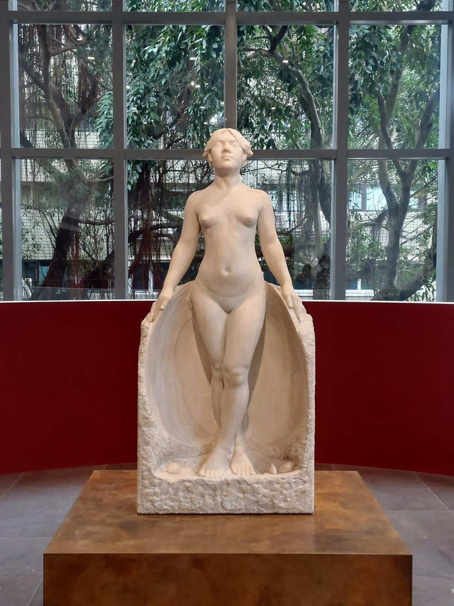

藝術101名畫背後的故事 EP07
甘露水
黃土水・約1919–1921（1921年入選第三回帝展）

一尊少女雕像，被藏起來半個世紀。
台灣第一位帝展藝術家
黃土水是第一位入選日本帝展的台灣藝術家。1921年，他的大理石作品《甘露水》入選第三回帝展：一位少女站在打開的蚌殼上，臉微微上仰，雙眼半閉。1930年，他病逝於東京，才三十多歲。
從車站外到木箱裡
1931年遺孀把作品捐出，在今天的中山堂展出。戰後她跟著台灣省議會搬到台中，一度被丟在台中車站外，身上還被潑了墨跡。車站旁的張鴻標醫師把她帶回診所，1974年再移到霧峰的工廠，裝箱封存。
2021年重見天日
2021年，木箱在家屬同意下重新打開，由日本修復師森純一在北師美術館修復，同年12月公開展出。2022年她進入國立臺灣美術館典藏，2023年被文化部指定為國寶。
下次看到它，先看這裡
腳下的蚌殼 少女站在打開的蚌殼上，像從殼中誕生
微仰的臉 臉往上仰、眼半閉，像在承接甘露
作品資料
黃土水（Huang Tu-shui (Ng Thóo-tsuí)）
《甘露水》Sweet Dew / Water of Immortality，約1919–1921（1921年入選第三回帝展）
大理石雕塑 約真人大小（精確尺寸未查到可靠來源）
國立臺灣美術館（2022年入藏；文化部2023年指定為國寶）
《甘露水》Sweet Dew / Water of Immortality，約1919–1921（1921年入選第三回帝展）
大理石雕塑 約真人大小（精確尺寸未查到可靠來源）
國立臺灣美術館（2022年入藏；文化部2023年指定為國寶）